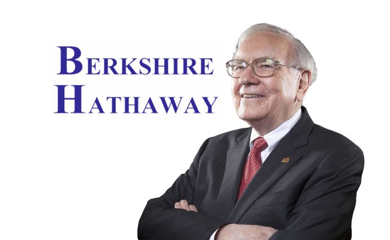

profile

BILL GATES
Bill Gates (born October 28, 1955, Seattle, Washington, U.S.) American computer programmer and entrepreneur who cofounded Microsoft Corporation, the world’s largest personal-computer software company. Gates wrote his first software program at the age of 13. In high school he helped form a group of programmers who computerized their school’s payroll system and founded Traf-O-Data, a company that sold traffic-counting systems to local governments. In 1975 Gates, then a sophomore at Harvard University, joined his hometown friend Paul G. Allen to develop software for the first microcomputers. They began by adapting BASIC, a popular programming language used on large computers, for use on microcomputers. With the success of this project, Gates left Harvard during his junior year and, with Allen, formed Microsoft. Gates’s sway over the infant microcomputer industry greatly increased when Microsoft licensed an operating system called MS-DOS to International Business Machines Corporation—then the world’s biggest computer supplier and industry pacesetter—for use on its first microcomputer, the IBM PC (personal computer). After the machine’s release in 1981, IBM quickly set the technical standard for the PC industry, and MS-DOS likewise pushed out competing operating systems. While Microsoft’s independence strained relations with IBM, Gates deftly manipulated the larger company so that it became permanently dependent on him for crucial software. Makers of IBM-compatible PCs, or clones, also turned to Microsoft for their basic software. By the start of the 1990s he had become the PC industry’s ultimate kingmaker.
company
MICROSOFT
Microsoft Corporation is an American multinational technology corporation headquartered in Redmond, Washington. Microsoft's best-known software products are the Windows line of operating systems, the Microsoft 365 suite of productivity applications, and the Edge web browser. Its flagship hardware products are the Xbox video game consoles and the Microsoft Surface lineup of touchscreen personal computers. Microsoft ranked No. 14 in the 2022 Fortune 500 rankings of the largest United States corporations by total revenue;[2] it was the world's largest software maker by revenue as of 2022. It is considered one of the Big Five American information technology companies, alongside Alphabet (parent company of Google), Amazon, Apple, and Meta.
Microsoft was founded by Bill Gates and Paul Allen on April 4, 1975, to develop and sell BASIC interpreters for the Altair 8800. It rose to dominate the personal computer operating system market with MS-DOS in the mid-1980s, followed by Windows. The company's 1986 initial public offering (IPO) and subsequent rise in its share price created three billionaires and an estimated 12,000 millionaires among Microsoft employees. Since the 1990s, it has increasingly diversified from the operating system market and has made several corporate acquisitions, the largest being the acquisition of Activision Blizzard for $68.7 billion in October 2023,[3] followed by its acquisition of LinkedIn for $26.2 billion in December 2016,[4] and its acquisition of Skype Technologies for $8.5 billion in May 2011.
berkshire hathaway
Berkshire Hathaway Inc. (/ˈbɜːrkʃər/) is an American multinational conglomerate holding company headquartered in Omaha, Nebraska, United States. Its main business and source of capital is insurance, from which it invests the float (the retained premiums) in a broad portfolio of subsidiaries, equity positions and other securities. The company has been overseen since 1965 by its chairman and CEO Warren Buffett and (from 1978 to 2023) vice chairman Charlie Munger, both known for their advocacy of value investing principles. Under their direction, the company's book value has grown at an average rate of 20%, compared to about 10% from the S&P 500 index with dividends included over the same period, while employing large amounts of capital and minimal debt
The company's insurance brands include auto insurer GEICO and reinsurance firm General Re. Its non-insurance subsidiaries operate in diverse sectors such as confectionery, retail, railroads, home furnishings, machinery, jewelry, apparel, electrical power and natural gas distribution. Among its partially owned businesses are Pilot Flying J (80%),[6] Kraft Heinz Company (26.7%), American Express (18.8%), Paramount Global (15.4%),[7] Bank of America (11.9%), The Coca-Cola Company (9.32%) and Apple (5.57%).
